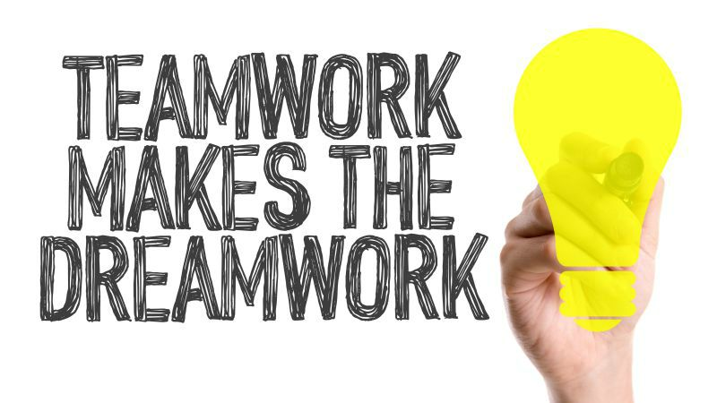

Skills
Ik volg de opleiding Software Developer aan het Techniek College op mbo-niveau 4, die 3 tot 4
jaar duurt. Tijdens deze opleiding leer ik hoe je websites en software ontwikkelt en met code
werkt. We behandelen programmeertalen zoals HTML, JavaScript, CSS en PHP.
Daarnaast
wordt er veel aandacht besteed aan probleemoplossend denken en het samenwerken in projecten. Ik
kan goed samenwerken, maar werk ook zelfstandig wanneer het nodig is. Bovendien ben ik een harde
werker, wat mij helpt om mezelf verder te ontwikkelen en later succesvol aan de slag te gaan als
softwareontwikkelaar.
| Talen |
Spreken |
Schrijven |
| Engels |
Bijna goed |
Goed |
| Nederlands |
Zeer goed |
Goed |
